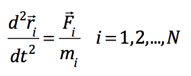
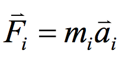

- Introduction
- Why Molecular Dynamics?
- MD Basic Process
- Classical Mechnics
- Interaction Model
- Force Field
- Integration Algorithm
- Boundary Condition
- Quantum Mechanics
- Simulation
- Summary
Agenda
Introduction
Molecular Dynamics (MD)
- Simulation Technique
- Dynamic motion of a group of particles (e.g. atoms)
- Solving the Newton's equation. 

Why Molecular Dynamics?
- An example of SH2 which is a protein domain involved in protein-protein interactions.
MD Basic Process
MD Basic Process
Molecular Modeling
- .
Classical Mechanics
- Force

Classical Mechanics
- Force ￫ Acceleration
Classical Mechanics
- Force ￫ Acceleration ￫ Velocity
Classical Mechanics
- Force ￫ Acceleration ￫ Velocity ￫ Position
Interaction Model
- Interaction force is the spacial derivative of the Potential Energy.
Interaction Model
- Interaction force is the spacial derivative of the Potential Energy.

Force Field
- The form and parameters of mathematical functions used to describe the Potential Energy of a system of particles (typically molecules and atoms)
Force Field
- The form and parameters of mathematical functions used to describe the Potential Energy of a system of particles (typically molecules and atoms)
Force Field
- The form and parameters of mathematical functions used to describe the Potential Energy of a system of particles (typically molecules and atoms)
Force Field
- The form and parameters of mathematical functions used to describe the Potential Energy of a system of particles (typically molecules and atoms)
Optimization Techniques
- Steepest Descent
MD Basic Process
MD Basic Process
Integration Algorithm
- There is no analytical solution to the equations of motion which must be solved numerically
Integration Algorithm
- There is no analytical solution to the equations of motion which must be solved numerically
Boundary Condition
- Free boundaries condition
- Ex: Droplet of liquid, protein in vacuum;
Boundary Condition
- Rigid boundaries condition
- In principle we need a ‘sacrificial region’ between the part of the system under study and a fixed boundary
Boundary Condition
- The most widely used
- Simulated interactions of "bulk" material
- Out one side, in the other
Quantum mechanics
- Solve the limitation of Classical Mechanics
- Offers the principally most accurate description of intra- and intermolecular interactions.
Quantum mechanics
- Solve the limitation of Classical Mechanics
- Offers the principally most accurate description of intra- and intermolecular interactions.
Classical mechanics vs. Quantum mechanics
| Classical Mechanics | Quantum Mechanics |
|---|---|
| Atom as sphere (point charge & mass) | Electrons |
| Newton's Law | Uncertainty Principle & Probability |
| Less computational complexity | High computational complexity |
Simulation Example
- Water Channels in Cell Membranes
Molecular Dynamic Software
- CHARMM
- Amber
- GROMOS
- Gromacs
- NAMD
Summary
- Why molecular dynamic simulation?
- Why classical mechanics?
- How molecule modelled?
- What's more to know?
<Thank You!>
Questions?